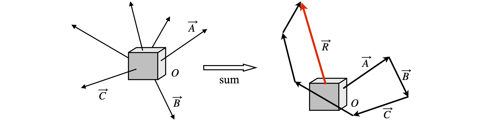
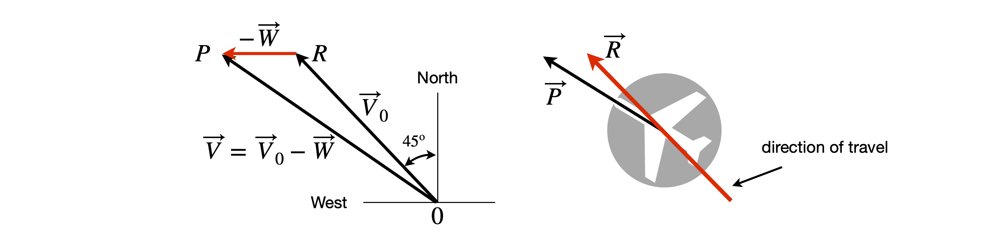

Solutions Q1 - 24
Contents
Solutions Q1 - 24#
# import all python add-ons etc that will be needed later on
%matplotlib inline
import numpy as np
import matplotlib.pyplot as plt
from sympy import *
init_printing() # allows printing of SymPy results in typeset maths format
plt.rcParams.update({'font.size': 16}) # set font size for plots
Q1 answer#
Let vector OP be the vector 2 km due north, with length \(a = 2\), and PQ the vector north-east, which is at \(45^\text{o}\) to north, and of length \(b = 3\). The vector \(OQ = OP + PQ\). The angle sought is \(P-O-Q\) and the length of vector \(O\)Q is the distance the crow flies, \(c\), see figure 56.
One way of solving the problem is to draw a diagram, measuring the angle \(POQ\) and the length of the line \(OQ\). Analytically we can use the cosine formula to obtain the length \(OP\) knowing that the angle \(OPQ\), which is \(\chi = 90 + 45^\text{o}\). To use this formula to calculate the third side, the other two sides and the enclosed angle must be known, therefore,
giving \(c=4.64\) km. This formula can be used again to find \(\angle POQ = \beta\) or the law of sines rearranged as
and as \(\chi\) is known \(\sin(\beta)=0.458\) and \(\beta = 27.29^\text{o}\). The direction home \(Q \to O\) is \(27.29^\text{o} \equiv 27^\text{o} 17'\) west of south or \(207^\text{o} 17'\). ( \(0.29\) degrees is \(0.29\cdot 60 = 17\) minutes, approximately.)
Figure 56 Sketch representing the vectors.
Converting into matrix - vector form involves calculating the components of the vectors. Vector \(OP = [0\; a]\) because it lies on the y-axis and vector
The \(x\) (first) term is the projection of \(\vec b\) on the x-axis and \(\vec b\sin(45^\text{o}) = b/ \sqrt{2}\) is the projection on the y-axis. Vector \(\vec c\) is
and its length using equation 9 is
which gives \(c^2=13+6\sqrt{2}\) and is the same result as above but without having to know the cosine rule.
The angle \(\beta\) is calculated from the dot product between vectors \(OP\) and \(OQ\) which is
and the angle \(\beta\) can be evaluated this time without knowing the sine rule.
Q2 answer#
Suppose the forces are \(f_1 \cdot f_6\) then the resultant force is \( R= f_1 +f_2 +f_3 +f_4 +f_5 +f_6\). If the body does not move,then the total of all forces must be zero and therefore the applied force is \(-R\). Let us choose six randomly arranged forces and add them up in any order; the result is the same, because vector addition is commutative; \(\vec A + \vec B = \vec B + \vec A\) and also associative: \(\vec A + (\vec B + \vec C) = (\vec A + \vec B) + \vec C\). The vectors are shown in figure 57. Vector \(OA\) is \(f_1\), and the addition carried out in a clockwise fashion starting with \(O\)A. The resultant vector is \(\vec R\) and to maintain the position of the body at O a vector, of the same direction and magnitude as \(\vec -R\), has to be applied to it.

Figure 57. Resultant, \(\vec R\), of six vectors; the force \(-\vec R\) is applied to hold the body stationary.
Q3 answer#
The plane travels along the vector \(\vec v_0\) when there is no wind with a ground speed \(|\vec V_0 | = 200\) mph (| | means use the absolute value). The \(50\) mph wind from the west will push the plane towards the north and east if the pilot does not compensate for this. Consequently the pilot has to fly the plane with its nose pointing a little into the wind along the vector \(\vec V\), and therefore the wind vector is reversed and the resultant is \(\vec V = \vec V_0 -\vec W\), see figure 58.
The angle between \(\vec V_0\) and \(\vec W\) is \(180- 45= 135^\text{o}\) because \(\vec W\) is due west and using the cosine formula gives
and \(|\vec V| = 238\) mph. Using the law of sines the angle \(ROP\) is given by
The plane travels at an angle west of north by \(45 + 8.5 = 53.5^\text{o}\). Note that the magnitude \(|\vec V_0| = 200\) and \(|\vec W | = 50\) is used in the calculation. The picture on the right shows how the plane might look from the ground as it travels from \(O\) to \(R\), its nose pointing along vector \(\vec V\). On a windy day, it is possible to observe this type of behaviour as a small plane takes off or comes into land. A small yacht carried along on an ebb tide and tacking into a cross-wind will also not have its bow pointing in the direction of travel.

Figure 58. vectors for plane travel.
Q4 answer#
The vector triangle indicates that \(\vec A+\vec C=\vec B\),therefore, \(\vec C = \vec B - \vec A\). To prove the cosine law find \(\vec{C}\,^2\) and therefore calculate the dot product of \(\vec C\) with itself which is \(\vec C\cdot\vec C = |\vec C |^2 = c^2\). Also
because, by definition, \(\vec B\cdot\vec B = b^2,\; \vec C\cdot\vec C = c^2\) and \(\vec B\cdot\vec A = ab\cos(\chi)\).
Combining these terms gives \(c^2 = a^2 + b^2 - 2ab\cos(\chi)\), which is the cosine formula.
Q5 answer#
That \(2\theta =\varphi\) can be shown quite easily using geometry, it is a little more difficult but not hard using vectors.
The geometric solution can be seen by noting that the internal angles of a triangle add to \(180^\text{o}\). The triangle \(AOC\) is equilateral thus \(2\theta+ \angle AOC=180\) and also \(\varphi+\angle AOC =180\) hence \(\varphi=2\theta\). The angle \(ABC\) is \(90^\text{o}\) as shown in a particular case by making \(\varphi = 90^\text{o}\) then \(\theta = 45^\text{o}\) and by symmetry so is \(\angle ABC\). In the general case \(\angle OCB = (180-\varphi)/2=90-\theta\), and \(\angle ACB = \theta+90-\theta=90^\text{o}\).
In the vector solution we find the coordinates of points \(A\) and \(B\) which are \(A=(-r,0),\; B=(r,0)\). Point \(C\) is restricted to lie on the circle where \(x^2 +y^2 =r^2\), therefore point \(C\) has coordinates \((x, r^2 -x^2)\) and the vector from \(C \to A, \;\overrightarrow{CA}\) is, in the \(i,j\) basis
and vector
The dot product is
so the vectors are at right angles and the result is general as \(x\) can be any point on the circumference.
In matrix vector form the calculation is some what clearer using basis set \(\begin{bmatrix}1&0\\0&1\\ \end{bmatrix}\),
Q6 answer#
The vector \(\overrightarrow{AB}\) is made from the coordinates of \(B\) minus those of \(A\); \(\displaystyle \overrightarrow{AB} = 2r\boldsymbol i + 0\boldsymbol j\),
in the \((i, j)\) basis and in matrix-vector form is \(\displaystyle \overrightarrow{AB} = \begin{bmatrix}2r & 0\end{bmatrix}\).
The dot product to find \(\theta\) is
The dot product is equivalently given by
and so \(\cos(\theta)=\sqrt{(r+x)/2r}\).
Repeating the calculation for triangle \(COB\) we find that \(\cos(\varphi)=xx/r\), which could also have been determined directly from the definition of the cosine in this particular case. If \(\varphi = 2\theta\) then \(\cos(2\theta) = 2 \cos^2(\theta) - 1 \equiv \cos(\varphi)\) should be true. Substituting for the cosines gives \(2\cos^2(\theta) - 1 =(r+x)/r-1=x/r\) which shows that \(\varphi=2\theta\).
Q7 answer#
(a) The dot product is zero when the vectors are perpendicular because \(\cos(90^\text{o}) = 0\). The dot product is
therefore \(a=(-1\pm\sqrt{34})/3\). In vector-matrix notation
(b) When the vectors are parallel \(\cos(0)=1\) and then \(\vec A\cdot\vec B = |\vec A ||\vec B |\). Solving for \(a\) produces an imaginary number, therefore the two vectors cannot be made parallel.
This result can also be appreciated without resorting to calculation. If two vectors are parallel then the ratio of their components must be in a constant ratio because one is displaced from other. The two vectors have components in the ratios, \(a/b\) of \(1/3 : 2/a : -1/11\), so no real value of \(a\) will make the vectors parallel because the ratio will change with the value of \(a\).
Q8 answer#
The dot product between \(\vec A\) and \(\vec B\) is \(\vec A\cdot\vec B=9-10-6 =-7\) and as
therefore \(\theta = \cos^{-1}(-7/\sqrt{980})\), which is \(102.9^\text{o}\).
The vector triangle as drawn, is \(\vec A + \vec C = \vec B\), because the vectors point out from the origin; let us choose the third side to be the vector \(\vec C=\vec B - \vec A=\begin{bmatrix}0 &-7& 7\end{bmatrix}\). Notice that if this vector is drawn on the graph it has to start at the end of \(\vec A\); drawing it as \(\begin{bmatrix}0 &-7& 7\end{bmatrix}\) will be a line from the origin to coordinate \(\begin{bmatrix}0 &-7& 7\end{bmatrix}\) which will be parallel to \(\vec C\).
Let the other angle between \(\vec B\) and \(\vec C\) be \(\varphi\), then, \(\displaystyle \varphi =\cos^{-1}\left(\frac{\vec B\cdot\vec C}{\sqrt{\vec B\cdot\vec B}\sqrt{\vec C\cdot\vec C}} \right)=21.6^\text{o}\)
and the third angle is therefore \(55.46^\text{o}\).
Q9 answer#
As \(\vec A \cdot \vec B = |\vec A||\vec B|\cos(\theta )\), the dot product \(\displaystyle \vec A \cdot \vec B=\begin{bmatrix}2\\3\\4\end{bmatrix}\begin{bmatrix}4&3&2\end{bmatrix}=25\)
therefore \(|\vec A|=\sqrt{4+9+16}=\sqrt{29}\) and this is also the length of \(\vec B\). The angle is therefore \(\theta=\cos^{-1}25/29)\) radians. In python the calculation is
A = np.array([2,3,4])
B = np.array([4,3,2])
theta_rads = np.arccos(np.dot(A,B)/(np.sqrt(np.dot(A,A))*np.sqrt(np.dot(B,B))))
print('{:s}{:8.5}'.format('angle in degrees =', theta_rads*180/np.pi) )
angle in degrees = 30.45
Q10 answer#
The O-C-CA angle is found from the dot product of \(\overrightarrow {CO}\) and \(\overrightarrow {CC_A}\). Vector \(\overrightarrow {CO}\) is calculated as the coordinates of atom O minus those of atom C, and \(\overrightarrow {CC_A}\) similarly.
The cosine of the angle, using equation 2 or 6, is \(-0.4944\) giving an angle of \(119.61^\text{o}\) which is a typical value for an sp\(^2\) type C-CO bond angle. The CO bond length is \(\sqrt{\vec{CO}\cdot\vec{CO}} =1.229\) angstrom.
Calculating the C-CA-N bond angle using Python ,defining the coordinates first as vectors, gives
C = np.array([41.412,41.452,7.455]) # coordinate vectors in Angstrom
CA = np.array([ 41.142, 41.847, 8.918 ])
N = np.array([42.193,41.289,9.774])
CAC = C - CA # bond vectors
CAN = N - CA
CN_bond = np.sqrt(np.dot(CAN,CAN) ); # bondlength angstrom
CC_bond = np.sqrt(np.dot(CAC,CAC) ); # bondlength
dCN = np.dot(CAC,CAN)
dCC = np.dot(CAC,CAC)
dNN = np.dot(CAN,CAN)
angle = np.arccos(dCN/(np.sqrt(dCC)*np.sqrt(dNN )))*180/np.pi # angle in degrees
print('{:s}{:6.3f}{:s}{:6.3f}{:s}{:6.1f}'.format(
'CN bond =', CN_bond,' CC bond =',CC_bond, ' C-Ca_N angle =',angle))
CN bond = 1.466 CC bond = 1.539 C-Ca_N angle = 109.4
Exercise: Calculate the CB-CA-N angle and the length of the CO and C\(_A\)N bonds.
Q11 answer#
Let \(\vec A=\begin{bmatrix}2 &3 &-6\end{bmatrix}\) and \(B=\begin{bmatrix}3 &-2 &4\end{bmatrix}\) then the line is either \(\vec A-\vec B\) or \(\vec B-\vec A\); both are acceptable until the angle to an axis is determined, one will produce an angle of 180° minus the other. The direction cosine with the x-axis base vector \(\vec x\) is
which is the cosine of the angle of the line to the \(x\)-axis; see figure 3. Vector \( \vec A -\vec B = \begin{bmatrix}-1& 5 &-10\end{bmatrix}\) and this has a magnitude \(\sqrt{126}\).
Base vector \(\vec x = \begin{bmatrix}1& 0& 0\end{bmatrix}\) because it is the \(x\)-axis and is normalized to \(1\). The dot product with \(\vec A\vec B\) is \(-1\) because two terms in \(x\) are zero; the direction cosine is \(-1/\sqrt{126}\). The full calculation is
The direction cosines with the other axes are \(5/\sqrt{126} \) and \(-10/\sqrt{126}\) for \(y\) and \(z\) respectively.
Figure 59. The x-direction cosine is the cosine of the angle \(\theta_x\) between the vector and the \(x\)-axis.
The angles are the inverse cosines of these values or \(180\) minus the angle if not acute. With the \(x\)-axis the angle is \(95.11^\text{o}\), with \(y, 63.55^\text{o}\) and with \(z, 152.99^\text{o}\), but as acute angles these must be \(84.88, 63.55\), and \(27.02\) degrees respectively.
Q12 answer#
The dot product is that between vectors \(\overrightarrow{OB}\) and \(\overrightarrow{AC}\). The coordinates of \(A\) are \((d, 0 0)\) so that the vectors can be written as
or in matrix vector form as
either will do. The other vectors are
The vector \(\vec{AC}\) is therefore \(\overrightarrow{AC} = \overrightarrow{OC} - \overrightarrow{OA} = -d\boldsymbol i + d\boldsymbol j + d\boldsymbol k\).
The length of the diagonal, the square root of the sum of the square of each term in the vector, is \(3d\). The angle is found using the dot product
and
therefore the angle is \(\theta = \cos^{-1}(1/3) = 70.52^\text{o}\) which is \(70^\text{o} 31'\). The obtuse angle can be calculated by reversing one of the vectors or by geometry with the calculation \(180 - \theta\) ; the angle is \(109.47^\text{o}\), which is the tetrahedral bond angle.
Figure 60. The tetrahedral angle is \(180-\theta\)
Q13 answer#
As the bond is drawn within a cube, figure 10, the angle \(\phi = 45^\text{o}\). Letting the cube have a side of \(1\) unit, then the vector
Using the equation for dot products with the normalized vectors gives
then \(\theta=35.26^\text{o}\). The angle\(\chi\) is the angle from the y-axis to the diagonal and is
then \(\chi=54.7^\text{o}\).
The angle \(\alpha\) is most easily found by making point \(g\) the origin and recalculating vectors \(\overrightarrow{gO}\) and \(\overrightarrow{gf}\). The recalculated vectors are \(\overrightarrow{gO} = \begin{bmatrix}-1 &-1& -1\end{bmatrix},\;\overrightarrow{gf} = \begin{bmatrix}-1& 1& 1 \end{bmatrix}\), therefore,
and the angle \(109.47^\text{o}\), the normal sp\(^3\) bond angle.
Q14 answer#
(a) If the coordinates of the carbon are selected to be at \((0, 0, 0)\) the H atom, top right, is at position \((a, a, a)\), bottom middle at \((a,-a,-a)\),and the other two atoms at \((-a, -a, a)\) and \((-a, a, -a)\). Now calculate the bond length in terms of \(a\). By Pythagoras’ theorem the length of the CH bond is calculated with distances as shown in figure 62, where \(m\) is the middle of the base of the cube and the distance from the C atom to \(m\) is \(a\). The distance \(mH\) is half the length of the diagonal of the cube and is \(\sqrt{2a^2} = a\sqrt{2}\), therefore the length CH, the bond length, is \(\sqrt{a^2 + 2a^2} = a\sqrt{3}\). As the bond length is \(0.157\) nm, then the side of the cube, of length \(2a\), is \(0.181\) nm. The distance between H atoms is \(2 mH\), which is \(2a\sqrt{2}\) or \(0.256\) nm.
Left Figure 61, Right fig 62. Left. Methane is shown drawn inside a tetrahedron and in the conventional perspective way. The axes are shown as dashed lines. Right. Bond length calculation.
(b) To use the dot product to work out the bond angles, allow any two CH bonds to be vectors and call them \(\vec B_1\) and \(\vec B_2\), then \(\vec B_1\cdot\vec B_2 = |\vec B_1 ||\vec B_2 |\cos(\theta)\), which immediately presents us with a problem because we need to work out \(\vec B_1\cdot\vec B_2\). Let \(\vec B_1\) be the vector from the carbon to the H atom at \((a, -a, -a)\) and let \(\vec B_2\) be that to the H atom at \((a,a,a)\). Any pair can be chosen because the result will be the same by symmetry. The next step is to write each vector in its basis-set as a list of numbers to represent the vector as a one-dimensional row or column matrix. If a row vector is written \(\vec B_1 = \begin{bmatrix}a &-a& -a\end{bmatrix}\) in the basis of \((x, y, z)\), the corresponding column vector is clearly
Then using matrix multiplication rules,
in which the first entry of each column or row is multiplied together and similarly for the second and third, and the sum of the three products is then made. In a dot product, the left hand of the two vectors is always a row; the right hand always a column. Using the dot product, the angle \(\theta\) in the tetrahedron is given by
as the magnitude of each vector is \(a\sqrt{3}\). The angle is therefore \(\theta=\cos^{-1}(-1/3)=1.9106\) radian which corresponds to \(109.47^\text{o}\). The calculation done symbolically using Python/Sympy is
a = symbols('a')
B1 = Matrix([a,-a,-a])
B2 = Matrix([a,a,a])
dot_prod = B1.dot(B2)
dot_prod
angle = dot_prod/( sqrt(B1.dot(B1))*sqrt( B2.dot(B2) ) )
angle
Finally, a simpler way to work out the bond length is to calculate the length of one of the CH vectors. The nearest H atom figure 61 has a vector from the origin \(\begin{bmatrix}a &-a &-a\end{bmatrix}\) and its length squared is \(\displaystyle \begin{bmatrix}a &-a &-a\end{bmatrix}\begin{bmatrix}a \\-a \\-a\end{bmatrix}=3a^2\). The H-H distance is the difference between two CH vectors, for example, the nearest and top right \(\begin{bmatrix}a &-a &-a\end{bmatrix}-\begin{bmatrix}a &a &a\end{bmatrix}=8a^2\) or a length \(2a\sqrt{2}\).
Q15 answer#
The bond is made into a vector and its length calculated using equation 3 and 4. The bond angles are calculated with equation 2. The O-H\(_1\) and O-H\(_2\) bond vectors are the difference between the atom’s coordinates. By symmetry, the bond lengths must be the same but may be slightly different due to experimental uncertainty in determining the coordinates.
Oatom = np.array([2.0317, -1.1893, -1.0464])
H1 = np.array([1.1374, -1.0385, -0.7880 ])
H2 = np.array([2.5201, -0.4437, -0.7383 ])
dot11 = np.dot( (Oatom-H1),(Oatom-H1))
dot22 = np.dot( (Oatom-H2),(Oatom-H2))
bond1 = np.sqrt(dot11 ) # eqn 4
bond2 = np.sqrt(dot22 )
angle = np.arccos(np.dot( (Oatom-H1),(Oatom-H2)/(bond1*bond2)) )
print('{:s}{:6.4f}{:s}{:6.4f}{:s}{:8.2f}{:s}'.
format('bond 1 = ',bond1/10,' nm, bond 2 = ', bond2/10,' nm, angle = ', angle*180/np.pi,' degrees' ) )
bond 1 = 0.0943 nm, bond 2 = 0.0943 nm, angle = 105.97 degrees
Q16 answer#
Define vectors for each atom in NH\(_3\); use the dot product of the difference of two atom vectors to calculate the bond length; equation 9.
N = np.array([-0.0200,-0.9149,0.1781])
H1= np.array([0.5390, -0.08866, 0.09569])
H2= np.array([0.1972, -1.5122, -0.6032 ])
H3= np.array([-0.9788, -0.6416, 0.09542])
dotNH1 = np.dot(N-H1,N-H1)
dotNH2 = np.dot(N-H2,N-H2)
dotNH3 = np.dot(N-H3,N-H3)
bond1 = np.sqrt(dotNH1)
bond2 = np.sqrt(dotNH2)
bond3 = np.sqrt(dotNH3)
angle1= np.arccos( np.dot(N-H1,N-H2)/bond1*bond2 )*180/np.pi
angle2= np.arccos( np.dot(N-H1,N-H3)/bond1*bond3 )*180/np.pi
angle3= np.arccos( np.dot(N-H2,N-H3)/bond2*bond3 )*180/np.pi
print('{:s}{:8.4f}{:8.4f}{:8.4f}'.format( 'bond length/angstrom', bond1,bond2,bond3) )
print('{:s} {:8.2f} {:8.2f} {:8.2f}'.format( 'bond angles/degree',angle1,angle2,angle3) )
bond length/angstrom 1.0010 1.0072 1.0004
bond angles/degree 108.04 107.65 107.75
which produces an average bond length of \(1.003 \pm 0.004\) angstrom. The mean angle is \(107.8 \pm 0.2\) degrees using \(\bar x=(\sum_i x_i)/n\), and \( \sigma^2=(\sum_i(x_i-\bar x)^2)/(n-1)\).
(b) Ammonia has a three fold symmetry (C\(_{3V}\) point group). Bond angles and distances confirm this within the experimental error. The distance from the plane of the hydrogen atoms to the nitrogen can therefore be calculated by finding the mid-point of the three H atoms and calculating the distance of this point from the N atom.
Hav = (H1 + H2 + H3)/3
dist= np.sqrt( np.dot(Hav - N,Hav - N) )
print('{:s} {:6.4f} {:s}'.format('N to mean H distance', dist, ' angstrom') )
N to mean H distance 0.3623 angstrom
This distance \(0.36\) angstrom, is slightly smaller than the \(0.38\) measured by microwave spectroscopy (Gordy et al. 1953, p. 128). A general method of finding the distance of an atom from a plane is described in section 16.3.
Q17 answer#
Suppose that two points \((0,u,v)\) and \((0,u,-v)\)} are chosen arbitrarily. To find the angle, make \(\vec B_1\) and \(\vec B_2\) the vectors from the centre to these two vertices and calculate the dot product. The angle between them is
Expanding the dot product in the \((x,y,z)\) basis as vectors gives
As the magnitude of each vector is \(\sqrt{u^2 + v^2}\), the enclosed angle is \(\displaystyle \theta =\cos^{-1}\left( \frac{u^2 - v^2}{u^2 + v^2} \right)\). substituting for the values given in the question produces \(\displaystyle \theta =\cos^{-1}\left( \frac{\gamma^2 - 1}{\gamma^2 + 1} \right)\) and as \(\gamma= (1+\sqrt{5})/2\), \(\theta= 1.107\) radians or \(63.43^\text{o}\).
Exercise: Take other pairs of vertices and find angles of \(180^\text{o}\) and \(116.56^\text{o}\); identify these angles from the centre of the icosahedron to the vertices.
Q18 answer#
From the sketch in the question \(\vec p\) can represent many vectors if the only condition imposed upon it is that it has to be perpendicular to \(\vec v\). Choosing the point \((1, 1, 0)\) to be the base (origin) of the vector, then \(\vec v\) is the difference between coordinates of the atoms it connects; \(\vec v = \begin{bmatrix}0 &0& 1\end{bmatrix}\) and this means that it points in the +\(z\)-direction, and its origin has been changed; the origin \((0, 0, 0)\) of vector \(\vec v\) is now at its foot. Alternatively, you may consider that \(\vec v\) runs along the z-axis, but either way the dot product is
and \(p_3\) must be zero because the vectors \(\vec p\) and \(\vec v\) are at right angles and therefore \(\vec v\cdot\vec p = 0\), which means that \(p_1\) and \(p_2\) can take any values. The vector is therefore \(\vec p = \begin{bmatrix}p_1& p_2& 0\end{bmatrix}\) . However, this is not with respect to the axis drawn on the figure because the vector carries its own axes with it, which are parallel to \(x, y, z\) on the diagram. All that can be concluded is that \(\vec p\) lies in the \(x-y\) plane. The diagram appears therefore somewhat confusing, because the axes as labelled do not refer to the vectors as drawn; \(\vec p\) does lie parallel to the \(x-y\) plane in the figure but in its own coordinates with \(z = 0\).
Q19 answer#
The vectors to points \(A, B\) and \(C\) from the centre are \(\begin{bmatrix}u &v& w\end{bmatrix},\begin{bmatrix}u &w &v\end{bmatrix}\), and \(\begin{bmatrix} w&v&u\end{bmatrix}\) since the centre of the hexahedron is at \((0, 0, 0)\). The angle \(\theta\) between \(A\) and \(B\) is defined in the triangle below, left.

Figure 63. Section of truncated cube.
The dot product should be used to find the angle between vectors \(\overrightarrow{OA}\) and \(\overrightarrow{OB}\), which must be normalized or their length determined. This angle is given by
The length of \(\overrightarrow{OA}\) is the same as that of \(\displaystyle \overrightarrow{OB}\) or \(|\overrightarrow{OA}|^2= \begin{bmatrix}u&v&w\end{bmatrix} \begin{bmatrix}u\\v\\w\end{bmatrix}\) hence \(|\overrightarrow{OA}|= u^2+v^2+w^2\) and \(\overrightarrow{OA}\cdot \overrightarrow{OB}= \begin{bmatrix} u&v&w\end{bmatrix} \begin{bmatrix}u\\w\\v\end{bmatrix} = u^2+2vw\) making the angle
Using values \(u=0.6786,\;v=u,\; w=0.2811\) produces an angle \(\theta = 32.65^\text{o}\).
(b) By symmetry the three points \(A, B, C\) form an equilateral triangle because they are at an equal distance from the centre of the cube, each distance being \(\sqrt{u^2 + v^2 + w^2}\) and the lengths of the sides of the triangle are the same. One side is the vector \(OA - OB\) or \(\begin{bmatrix}0& v - w& w-v\end{bmatrix}\) which has length \((v-w)^2 +(w-v)^2= (v - w)^2\) and because \(u = v\), the internal angles must all be \(60^\text{o}\). The triangle is therefore also isosceles (equilateral being a special case of an isosceles triangle). The point \(p\) is at the centre of the triangle therefore this has coordinates that must be the average of those of \(A, B, C\) and which are
To show that the plane of the triangle is perpendicular to the line from \(O\) to \(p\), which seems obvious from the figure, form a vector from \(A \to p\) that must lie in the plane of the triangle \(ABC\), and find its dot product with \(O\)p; see the right hand of Fig. 6.63. (We could also have chosen point \(B\) or \(C\)).
The vector
and from \(a\) to \(p\) is
which is \(\overrightarrow{Op}-\overrightarrow{Ap}\).
The dot product is easier to calculate if first simplified with \(u = v\) to remove \(v\). The fact that the dot product is zero, can be seen by inspecting the terms, as the column vector has equal elements and the sum of the first two entries of the row vector are equal but opposite to the third.
Because this product is zero \(\overrightarrow{Op}\) and \(\overrightarrow{Ap}\) are perpendicular.
Q20 answer#
(a) The vectors of the rays \(AB\) and \(CD\) are subtracted, as shown below. The dotted line is the resultant vector of length \(n\lambda\); the vector equation is \(|\overrightarrow{AB}|-|\overrightarrow{CD}|=n\lambda\).
Figure 64. The resultant vector (dotted) has length \(n\lambda\).
The distance \(AB\) is \(d\cos(\theta)\) and distance \(CD\) is \(d\cos(\phi)\) and their difference must be \(n\lambda\), therefore \(d(\cos(\theta) - \cos(\phi) = n\lambda\), which is the Laue equation. The zero order angle is the condition, \(\theta = \phi\). The first order angles occur at \(\theta_{\pm 1} = \cos^{-1}(\pm \lambda /d + \cos(\phi))\) and the second order at \(\theta_{\pm 2} = \cos^{-1}(\pm 2\lambda/d + cos(\phi))\).
(b) Using the last two equations, plotting a graph for the zeroth, first, and second orders, n, produced figure 65.

Figure 65. Graph of \(0, \pm 1, \pm 2, \pm 3\) diffraction orders from a line of atoms separated by \(0.4\) nm with Cu K\(_{\alpha 1}\) radiation. \(\phi\) is the incident and \(\theta\) the diffracted angle in degrees.
The zeroth order scattering occurs when the incident X-ray is at any angle to the line of atoms and the scattering occurs at the same angle, i.e. in the direction of the X-rays. This is clearly not very useful.
The first or second, and higher positive order scattering only happens when the diffracted angle \(\theta\), satisfies \(\cos(\theta) - \cos(\phi) = n\lambda/d\). From the graph, the minimum diffracted angle occurs when \(\theta = 0\), i.e. diffraction along the line of atoms; the incident angle is then \(\cos(\phi) = 1 - n\lambda/d\) which is \(\approx 52.0^\text{o}\) for the \(+1\) order and \(76.7^\text{o}\) for the \(+2\) order. In practice, a larger incident angle would have to be used. The \(-1\) and \(-2\) orders occur only when \(\phi\) is between its maximum value, which is about \(103^\text{o}\) for the \(-2\) order, and zero.
Exercise: Calculate the exact limits \(\theta,\; \phi\) as appropriate for the \(\pm 1,\; \pm 2\) order diffraction.
Q21 answer#
(a) One of each of the planes \((1\;1\;2)\) and \((2\;2\;4)\) are shown on the figure. The \((1\;1\;2)\) shown has lattice points \(a = 4, b = 4, c = 2\) making the fractions \(1/4, 1/4, 1/2\). Clearing fractions produces the Miller indices. The other two mentioned in the question can easily be added.
Figure 66. lattice planes
To prove that the planes are parallel, the \((1\;1\;2)\) and \((2\;2\;4)\) are chosen. One plane is parallel to another if the angle between their normal vectors is zero, the normal being the cross product of two vectors in the same plane. The plane \((1\;1\;2)\) is described in reciprocal space by the vectors \(\vec p=\begin{bmatrix}1& 0 &0\end{bmatrix}, \vec q=\begin{bmatrix}0 &1& 0\end{bmatrix}\) and \(\vec r=\begin{bmatrix}0 &0& 2\end{bmatrix}\). Two vectors in this plane are therefore \(\vec p - \vec q = \begin{bmatrix}1 &-1& 0\end{bmatrix}\) and \(\vec p - \vec r = \begin{bmatrix}1 &0& -2\end{bmatrix}\) and by definition their cross product must be normal to the plane. This normal vector \(\vec n_1 =(\vec p-\vec q)\times (\vec p-\vec r)\) can be formed in the basis set of the reciprocal axes \(\vec {a^*},\vec {b^*},\vec{c^*}\) and calculated as the determinant,
The starred axes labels are conventionally used to denote the reciprocal axes. In matrix-vector form, this vector is \(\vec n_1 = \begin{bmatrix}2 &2 &1\end{bmatrix}\). The similar vectors for the plane \((2\;2\;4)\) are \(\vec p=\begin{bmatrix}2 &0 &0\end{bmatrix}, q=\begin{bmatrix}0 &2& 0\end{bmatrix}\) and \(\vec r=\begin{bmatrix}0& 0 &4\end{bmatrix}\), consequently
or in vector form \(\vec n_2=\begin{bmatrix}8&8&4\end{bmatrix}\). The normalization constants for the two vectors \(\vec n_1\) and \(\vec n_2\) are respectively \(3\) and \(12\) and the dot product of these two normalised vectors is unity.
The angle between the two normal vectors is zero because \(\cos(0) = 1\), and therefore these planes are parallel.
(b) Following part(a) but now using the Miller indices, the vectors of the first plane are \(\begin{bmatrix}h&0&0\end{bmatrix}, \begin{bmatrix}0&k&0\end{bmatrix}, \begin{bmatrix}0&0&l\end{bmatrix}\); the two vectors in the plane are then the differences \(\begin{bmatrix}h&-k&0\end{bmatrix}, \begin{bmatrix}h&0&-l\end{bmatrix}\) and their cross product the vector \(\vec v=\begin{bmatrix}kl&hl&hk\end{bmatrix}\), and similarly for another plane the vector must be \(\vec{v'}=\begin{bmatrix}k'l'&h'l'&h'k'\end{bmatrix}\).
To obtain the dot product, the vectors must be normalised; the constants are
and the angle obtained from the dot product
The calculation in Python is
# Algorithm Testing for parallel planes.
#------------------------
def parl_planes(h,k,ell,h1,k1,ell1): # input hkl, for each plane
p = np.array([h,0,0])
q = np.array([0,k,0])
r = np.array([0,0,ell])
p1 = np.array([h1,0,0])
q1 = np.array([0,k1,0])
r1 = np.array([0,0,ell1])
cp = np.cross(p-q, p-r)
cp1= np.cross(p1-q1,p1-r1)
dotp = np.dot(cp1,cp)/( np.sqrt(np.dot(cp,cp))*np.sqrt( np.dot(cp1,cp1) ) )
if (dotp == 1):
print('planes parallel ')
else:
print('{:s}{:8.2f}{:s}'.format('planes at angle',np.arccos(dotp)*180/np.pi,' degrees' ) )
#-----------------------
parl_planes(1,1,2,3,3,6)
parl_planes(1,1,1,2,2,0)
planes parallel
planes at angle 54.74 degrees
You will have noticed that parallel planes in reciprocal space have indices that are each integer multiples of one another.
(c) The larger of the two planes in the diagram, has intercepts \(a/2, b/4\) and \(3c/4\). The Miller indices are therefore \((2\; 4 \;4/3)\) which has to be simplified further to \((6\; 12\; 4)\) and this is parallel to \((3\; 6\; 2)\).
(d) If a plane is perpendicular to \((h\;k\;l)\),then the dot product of the normal to each plane must be zero. In this case, from the equation giving the angle between the planes \(\cos(\theta) = \cdots\) , it must follow that \(klk'l' + hlh'l' + khk'h' = 0\). As only \(h, k, l\) are known a unique plane perpendicular to our victim plane cannot be found. Only when two indices are known is the third uniquely defined.
Q22 answer#
(a) The equation for the perpendicular (shortest) distance from the origin to the plane is
when the plane has intercepts, \(p,q,r\).
(b) The intercepts of the plane \((1\;1\;0)\) are \(p=a,q=b,r=\infty\) thus the perpendicular distance from the origin is \(d_0=ab/\sqrt{a^2+b^2}\). The plane \((2\;2\;0)\) has intercepts \(p=a/2,q=b/2,r=\infty\) and thus \(d_0=ab/2\sqrt{a^2+b^2}\) and the separation between then is the difference.
The values for other planes are calculated in a similar way; for example, plane \((\bar 3\; 2 \;0)\) has intercepts \(h = -a/3, k=b/2, l=\infty\).
(c) The distance between consecutive planes is calculated by taking a lattice point \((h \;k\;l)\) and doubling the values, for example \((1\;1\;1)\) is parallel to \((2\;2\;2)\) and so forth. The distance to a general plane \((h \;k\;l)\) from the origin is
and the distance to the next plane is obtained as \(a\to 2a\) etc., then
and the difference is
which is more usually written as
Exercise: Calculate the distance \(d\) (part c) for a hexagonal lattice.
Q23 answer#
If the origin \((0, 0, 0)\) is at O, the vector \(\vec S_0\) has coordinates \((x, y) = (1/\lambda, 0)\) and therefore \(\vec S_0 = \begin{bmatrix}1/\lambda & 0\end{bmatrix}\). Using the projection of \(\vec S\) onto the line OB, see Fig. 3 for an example, the coordinates of point \(P\) define the vector
Because \(\vec h\cdot \vec h=|\vec S-\vec S_0|^2\),
and simplifying using \(2\sin^2(\theta) = 1 - \cos(2\theta)\) gives
which, by simplifying and rearranging, gives Bragg’s Law; \(\lambda = 2d\sin(\theta)\).
Q24 answer#
(a) Follow the pattern to complete all the labels!
(b) This separation is the reciprocal of the distance from the origin of the lattice to \((Q\;3\;0)\) on the Ewald diagram. This distance is \(\sqrt{(3b^*)^2 + a^*} = 48\;\mathrm{nm^{-1}}\), which makes the separation \(0.144\) nm. The angle is calculated as the dot product of the vector, call this \(\vec B_1\) from \((Q;1\;0) \to (Q\;3;0)\) and that of \(\vec B_2\), from \((Q\;1;0) \to (0;0;0)\). To make the calculation easier, move the vectors’ origin to the point \((Q \;1\;0)\), at the centre of the sphere, then the vector \(\vec B_1\) is \(\vec B_1=\begin{bmatrix}0&2b^*& 0\end{bmatrix}\) and when normalised is \(\vec B_1=\begin{bmatrix}0&2b^*& 0\end{bmatrix}/2b^* =\begin{bmatrix}0&1& 0\end{bmatrix} \).
Vector \(\vec B_2=\begin{bmatrix}a^*&-b^*& 0\end{bmatrix}\). and when normalised is \(\vec B_2=\begin{bmatrix}a^*&-b^*& 0\end{bmatrix}/\sqrt{a^{*2}+b^{*2}}\). The angle between the vectors is calculated using the dot product
Substituting in values gives \(\cos(\theta) = -1/2\) and the angle is \(120^\text{o}\).
(c) The wavelength to observe a lattice plane \((0\;1\;0)\) at the same crystal angle, is \(1/a^*\) which is \(1/(2\sqrt{3}) = 0.288\) nm. To observe the planes at \((1\;2\;0)\) the radius of the Ewald sphere has to be \(\sqrt{(2a^*)^2 + (2b^*)^2} = 8\;\mathrm{nm^{-1}}\) and therefore an X-ray wavelength of \(0.125\) nm is required.
(d) The crystal is rotated about the origin of the reciprocal space. The point \((1\;2\;0)\) has then to intersect the sphere, or circle, in our diagram. From the diagram, the point \((1\;2\;0)\) rotates about the origin with a circle of radius \(\sqrt{(2b^*)^2 + a^{*2}}\) because this reciprocal lattice plane is at coordinates \((a^*, 2b^*)\). The calculation now becomes one of calculating the intersection of two circles, the second of radius \(1/\lambda\) or \(4\;\mathrm{ nm^{-1}}\) but centred at \((\bar 1\;1\;0)\), and then finding the angle moved from the initial position. The equation of a circle of radius \(r\) centred at points \(p\) and \(q\) is \((x - p)^2 + (y - q)^2 = r^2\) therefore the larger circle centred at the origin is \(x^2 + y^2 = a^{*2} + 2b^{*2}\) and that centred at \((\bar 1\;1\;0)\) is \((x-a^*)^2 +(y+a^*)^2 =1/\lambda^2\). For simplicity \(y\) is the vertical axis, \(x\) the horizontal. At the intersection of the circles these two equations are equal. The simplest way to do this is to use Python/Sympy to solve the equations, but to do this by hand substitute \(x\) in to the second equation and solve for \(y\) then substitute this answer again to find \(x\).
Figure 67. The construction shows the angle \(\theta\) moved by point \((1\;2\;0)\) to intersect with the Ewald sphere centred at \((\bar 1\;1\;0)\). The smaller grey circle describes the rotation of point \((0\;1\;0)\) about the origin.
x, y = symbols('x, y') # use Sympy, define unknowns x, y
a = 2*np.sqrt(3)
b = 2
lamb = 0.25
c1 = x**2 + y**2 - a**2 - (2*b)**2
c2 = (x+a)**2 + (y-b)**2 - 1/lamb**2
ans = solve([c1,c2],(x,y))
print('{:s}{:6.3f} {:6.3f}{:s}{:6.3f} {:6.3f}'.format('x,y= ', ans[0][0], ans[0][1],' x,y= ', ans[1][0],ans[1][1] ))
x,y= -5.015 -1.687 x,y= -1.047 5.187
The initial point \((1\;2\;0)\) has coordinates \((a^*, 2b^*)\) and the angle between this and the points of intersection are found using a dot product. The vector to \((\bar 1\;1\;0)\) is \(\bar v_1 =\begin{bmatrix}2\sqrt{3} &4\end{bmatrix}\) and to the upper intersection \(\vec v_2 = \begin{bmatrix}-1.04678& 5.1869\end{bmatrix}\). The smaller angle to the diffraction position is \(52.3^\text{o}\), as calculated
v1 = np.array([a,2*b])
v2 = np.array([-1.047,5.186])
dotp= np.dot(v1,v2)/(np.sqrt(np.dot(v1,v1))*np.sqrt(np.dot(v2,v2)) )
theta=np.arccos(dotp)
print('{:s}{:8.2f}{:s}'.format('angle = ', theta*180/np.pi,' degrees'))
angle = 52.31 degrees
The crystal has to be rotated anticlockwise by \(52.3^\text{o}\) to cause diffraction from the \((1\;2\;0)\) plane; the crystal could also be turned by \(108.6^\text{o}\). The \((0\;1\;0)\) plane has coordinates \((0, b^*)\) and has to be rotated clockwise by a small angle to reach the Ewald sphere. The equation of its circle is \(x^2 + y^2 = b^{*2}\) and the intersection points, calculated in the same way as for point \((1\;2\;0)\), gives a clockwise rotation angle of \(15.5^\text{o}\) or anticlockwise of \(135.5^\text{o}\).